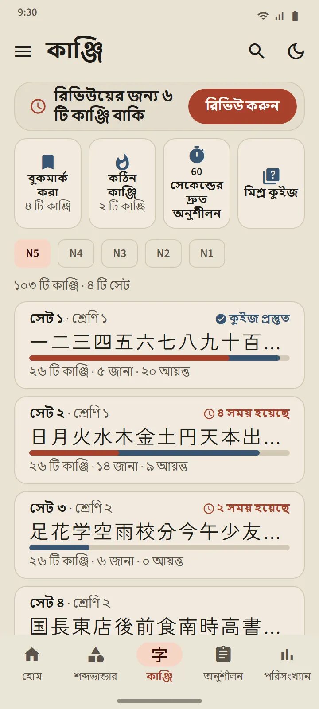
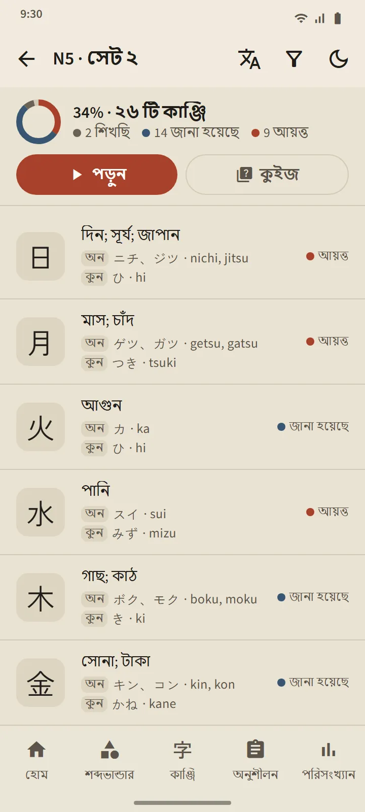
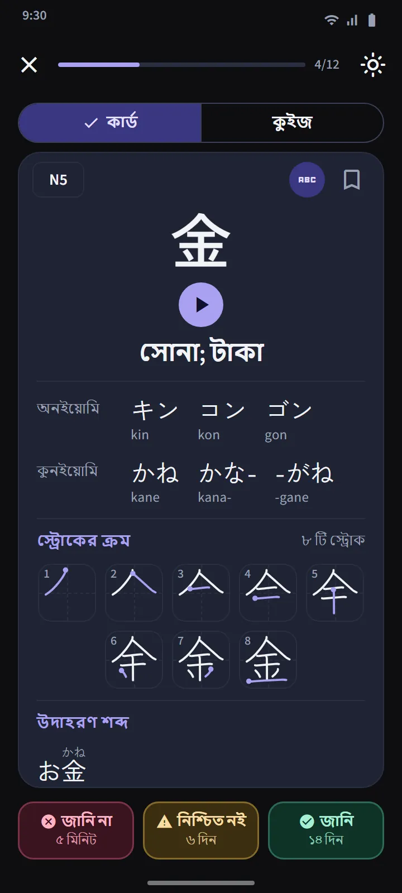
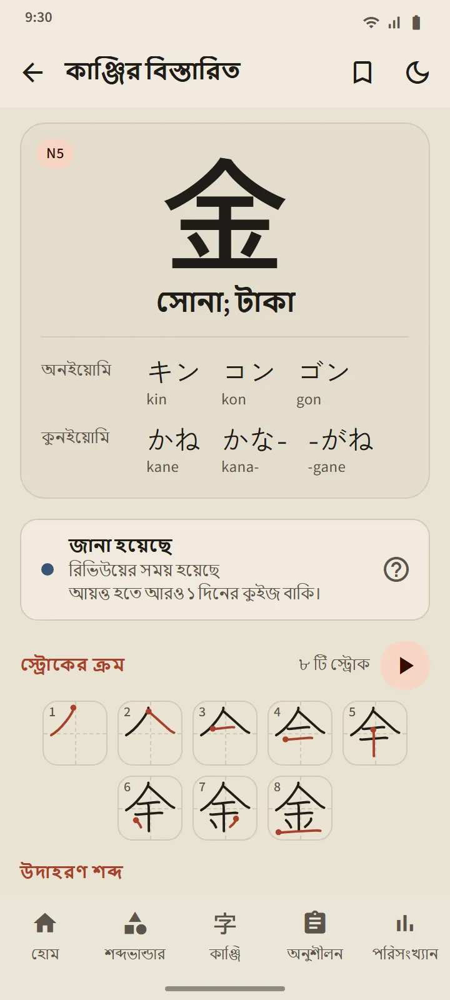
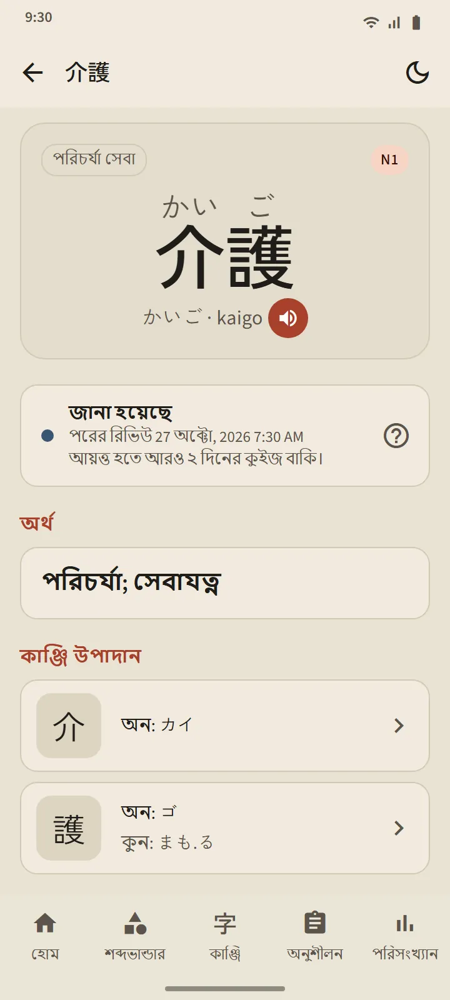
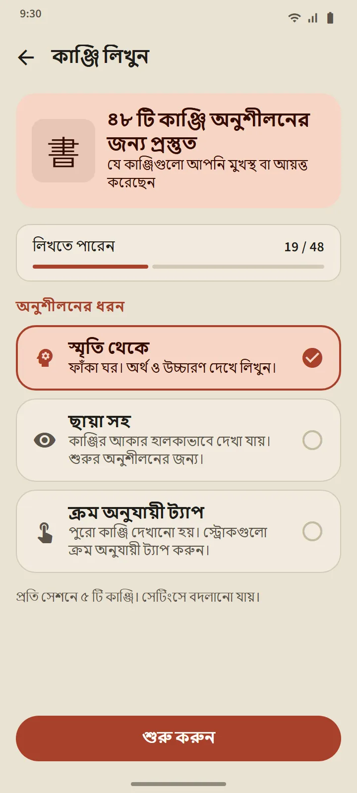
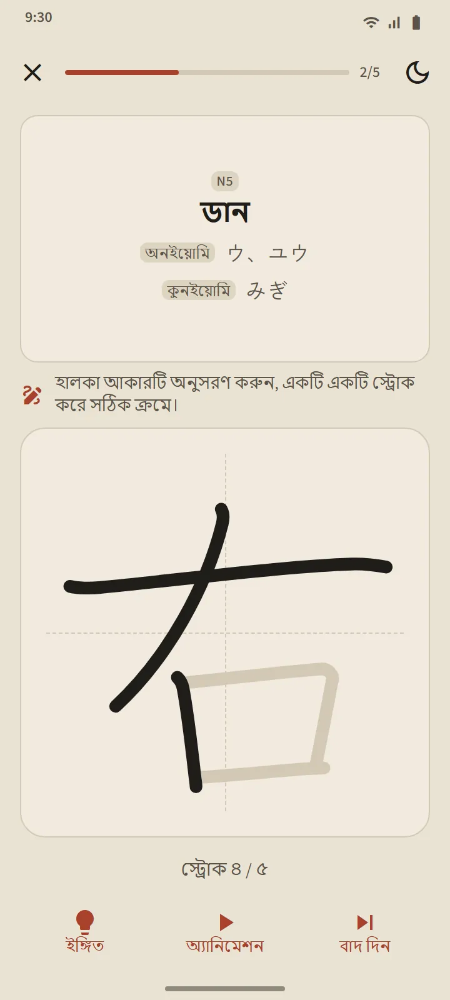

জাপানি স্কুলের ক্রমে 25টি কাঞ্জির সেট
কাঞ্জি ট্যাব প্রথমে JLPT স্তর অনুযায়ী, তারপর প্রায় 25টি কাঞ্জির সেটে ভাগ করা। এক স্তরের ভেতরে ক্রম চলে জাপানের স্কুল পাঠ্যক্রম অনুযায়ী (প্রথম শ্রেণি আগে), তারপর স্ট্রোকের সংখ্যা কম থেকে বেশি; যেসব ক্রম একসঙ্গে থাকা উচিত, যেমন সংখ্যা, সপ্তাহের দিনের নাম ও ঋতু, সেগুলো পরপর রাখা হয়। প্রতিটি সেটের সারিতে দেখা যায় তার কাঞ্জি, একটি অগ্রগতির বার, জানা ও আয়ত্ত করার সংখ্যা এবং একটি “কুইজ প্রস্তুত” লেবেল বা সময় হওয়া কাঞ্জির সংখ্যা।
| স্তর | কাঞ্জি | অ্যাক্সেস |
|---|---|---|
| N5 | ১০৩ | বিনামূল্যে |
| N4 | ১৮১ | Premium |
| N3 | ৩৭০ | Premium |
| N2 | ৩৬৯ | Premium |
| N1 | ১,২০৭ | Premium |


কাঞ্জি কার্ড ও কুইজ
কার্ডের সামনে শুধু কাঞ্জিটি। পেছনে: অর্থ, অন ও কুন পঠন (চাইলে রোমাজিসহ), প্রতি স্ট্রোকে একটি ফ্রেম ও শুরুর বিন্দু চিহ্নিত স্ট্রোক ক্রমের ডায়াগ্রাম এবং যেসব উদাহরণ শব্দে কাঞ্জিটি আছে। শব্দভান্ডারের কার্ডের মতো একই তিনটি বোতাম এর সময়সূচি ঠিক করে।
একটি সেটের কুইজ খোলে যখন 10টি কাঞ্জি জানা হয়েছে বা আয়ত্ত হয়েছে, আর তাতে তিন ধরনের প্রশ্ন থাকে: কাঞ্জি থেকে অর্থ, অর্থ থেকে কাঞ্জি এবং কাঞ্জি থেকে পঠন। আয়ত্তের নিয়ম একই: তিনটি ভিন্ন দিনে কুইজে সঠিক। ট্যাবের ওপরের কাঞ্জি রিভিউ সব সেটের সময় হওয়া প্রতিটি কাঞ্জি এক জায়গায় আনে, আর মিশ্র কুইজ সেটগুলোর মধ্যে মিলিয়ে পরীক্ষা করে।

কাঞ্জির বিবরণ ও বিশেষ ডেক
প্রতিটি কাঞ্জির বিবরণ পাতায় আছে তার অর্থ, ধাপ ও পরের রিভিউ, পঠন, স্ট্রোক ডায়াগ্রাম ও উদাহরণ শব্দ; একটি শব্দের বিবরণ পাতা থেকে তার উপাদান কাঞ্জিতে যাওয়া যায়। শব্দভান্ডারের মতোই কাঞ্জিরও আছে বুকমার্ক করা, কঠিন কাঞ্জি ও 60 সেকেন্ডের দ্রুত অনুশীলন ডেক, আর হোম স্ক্রিনের দ্রুত অনুশীলন অংশের একটি সুইচ তার চারটি টাইলকে কাঞ্জির সংস্করণে বদলে দেয়।


আঙুল দিয়ে কাঞ্জি লিখুন
যে কাঞ্জি আপনি জানেন বা আয়ত্ত করেছেন, সেগুলো লিখে অনুশীলন করা যায়: শুধু অর্থ ও পঠন দেখানো হয়, আপনি স্ট্রোকে স্ট্রোকে লেখেন, আর প্রতিটি স্ট্রোকের আকার, দিক ও ক্রম যাচাই হয়, অফলাইনে। তিনটি মোড: স্মৃতি থেকে, ছায়া সহ এবং ক্রম অনুযায়ী ট্যাপ। দুটি ভিন্ন দিনে কোনো সাহায্য ছাড়া স্মৃতি থেকে লিখলে একটি কাঞ্জি “লিখতে পারেন” হিসেবে গণ্য হয়।


কাঞ্জি পরিচিতি
কাঞ্জি মুখস্থ শুরুর আগে কাঞ্জি কীভাবে কাজ করে তা নিয়ে 11টি ছোট পাঠ: অনইয়োমি ও কুনইয়োমি এবং কখন কোনটি ব্যবহৃত হয়, ওকুরিগানা, っ ও রেন্দাকুর মতো বদলে যাওয়া ধ্বনি, পুরো শব্দ হিসেবে শেখা উচ্চারণ, র্যাডিক্যাল এবং স্ট্রোকের ক্রম। হোমের "জাপানি ভাষার ভিত্তি" অংশ থেকে খোলে, এবং বিনামূল্যে।
তথ্যের উৎস
অর্থ ও পঠন এসেছে KANJIDIC (Electronic Dictionary Research and Development Group) থেকে এবং স্ট্রোক ক্রম KanjiVG থেকে, দুটোই CC BY-SA লাইসেন্সের অধীনে। কাঞ্জির স্তর পুরোনো JLPT তালিকার ওপর ভিত্তি করা একটি অনুমান; বর্তমান JLPT কাঞ্জির কোনো অফিসিয়াল তালিকা প্রকাশ করে না।